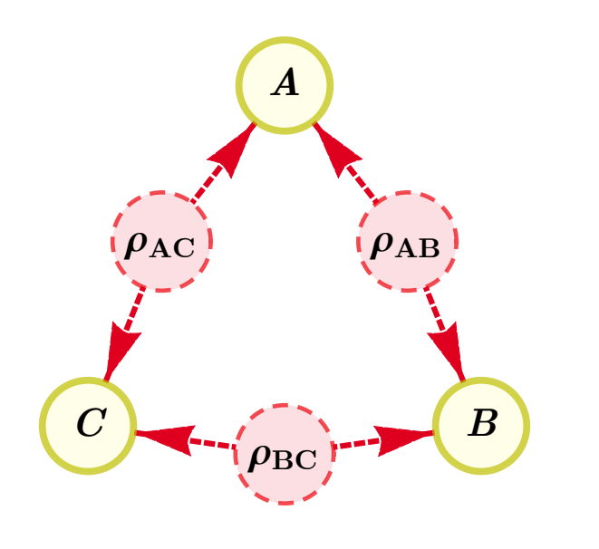

Examples and features¶
In this section we will showcase all the different features of the package progressively through a series of examples. We will beging by defining some auxiliary functions.
[1]:
def bisect(f, x0, x1, eps=1e-4, verbose=1):
# We assume f(x1) < 0 and f(x0) > 0
x = (x0 + x1) / 2
while abs(x1 - x0) > eps:
fx = f(x)
if fx >= 0:
x0 = x
else:
x1 = x
if verbose:
print(f"Maximum smallest eigenvalue: {fx:10.4g} Visibility = {x:.4g}")
x = (x0 + x1) / 2
return x
Feasibility problems and extraction of certificates¶
Example 1: Infeasibility of the W distribution in the quantum triangle scenario¶
Consider determining if the following distribution, the so-called “W distribution” (due to its similarity to the W state), is compatible with the triangle scenario:
It is known that it is incompatible with the classical triangle scenario [1] , however with quantum inflation, once can also show that it is incompatible with the quantum triangle scenario, depicted in the following figure:

To show this, we can generate the semidefinite relaxation of NPA level 2 corresponding to a second order quantum inflation. With the set_distribution method we set the entries of the moment matrix that depend on the probability distribution, and we attempt to solve the program with the solve() method:
[2]:
from causalinflation import InflationProblem, InflationSDP
import numpy as np
qtriangle = InflationProblem(dag={"rho_AB": ["A", "B"],
"rho_BC": ["B", "C"],
"rho_AC": ["A", "C"]},
outcomes_per_party=[2, 2, 2],
settings_per_party=[1, 1, 1],
inflation_level_per_source=[2, 2, 2])
sdp = InflationSDP(qtriangle)
sdp.generate_relaxation('npa2')
def P_W(vis=1):
dims = [2, 2, 2, 1, 1, 1]
noise = np.ones(dims) / 2**3
p = np.zeros(dims)
for a, b, c, x, y, z in np.ndindex(*dims):
if a + b + c == 1:
p[a, b, c, x, y, z] = 1 / 3
return vis * p + (1 - vis) * noise
sdp.set_distribution(P_W())
sdp.solve()
sdp.status
[2]:
'infeasible'
The problem status is reported as infeasible, therefore this serves as a proof that the W distribution is incompatible with the quantum triangle scenario.
Certificate extraction¶
We can furthermore recover a certificate of infeasibility as a polynomial inequality in the probabilities, \(\text{Poly}(p(abc|xyz) \geq 0\) . This means that any other correlations vector \(p'(abc|xyz)\) that also satisfies the inequality, \(\text{Poly}(p'(abc|xyz) \geq 0\), is guaranteed to lead to an infeasible SDP. There are built-in methods to extract the symbolic form of \(\text{Poly}(p(abc|xyz))\):
[3]:
sdp.certificate_as_probs(clean=True)
[3]:
In the above, lower indices indicate marginals. For example, \(p_{AC}(ac|xz) := \sum_b p(abc|xyz)\). Note that due to no-signaling, in this example the marginal is independent of the setting \(y\).
Finally, given that we only have two outcomes, we can also express the certificate in “correlator form”, where the correlators are defined as
where the omitted 2-body and 1-body correlators have similar definitions.
[4]:
sdp.certificate_as_correlators(clean=True, use_langlerangle=True)
[4]:
Example 2: Critical visibility of the 2PR distribution in the quantum tripartite-line scenario¶
It is known that the 2PR distribution, defined as:
is incompatible with the tripartite-line scenario (also called “quantum bilocal scenario”), whose DAG is depicted in the following figure:

This can be shown by running a feasibility program, as in Example 1. We might also be interested in studying how much noise this distribution can tolerate before the relaxation no longer identifies the distribution as incompatible. One simple model of noise is that of a probabilistic mixture with the uniform distribution:
A simple approach would be to vary the parameter \(v\) from \(v{=}1\) to \(v{=}0\) and find the \(v_{\text{crit}}\) for which the problem status changes from infeasible to feasible. However, there is a more robust method available.
Feasibility as an optimisation¶
A more numerically robust approach is to convert feasibility problems to optimisation problems. Instead of imposing that the moment matrix \(\Gamma\) of the SDP relaxation is positive semidefinite, we can maximize the minimum eigenvalue of \(\Gamma\) and check its sign. Clearly, if the result of the optimisation is negative, then one cannot find a matrix \(\Gamma\) that is positive semidefinite, thus the original program is infeasible.
By setting the flag feas_as_optim to True in the InflationSDP.solve() method, feasibility problems are converted to optimisation problems. The result is stored in InflationSDP.objective_value.
We encode the inflation scenario and generate the relaxation corresponding to NPA level 2. Next we run a simple bisection to find the \(v_{\text{crit}}\) for which the maximum minimum eigenvalue is 0. The bisection is implemented in an auxiliary file:
[5]:
from causalinflation import InflationProblem, InflationSDP
import numpy as np
qbilocal = InflationProblem(dag={"rho_AB": ["A", "B"],
"rho_BC": ["B", "C"]},
outcomes_per_party=[2, 2, 2],
settings_per_party=[2, 2, 2],
inflation_level_per_source=[2, 2])
sdp = InflationSDP(qbilocal)
sdp.generate_relaxation('npa2')
def P_2PR(vis=1):
dims = [2, 2, 2, 2, 2, 2]
noise = np.ones(dims) / 2**3
p = np.zeros(dims)
for a, b, c, x, y, z in np.ndindex(*dims):
p[a, b, c, x, y, z] = ( 1 + (-1) ** (a + b + c + x*y + y*z) ) / 8
return vis * p + (1 - vis) * noise
def f(vis):
sdp.set_distribution(P_2PR(vis))
sdp.solve(feas_as_optim=True)
return sdp.objective_value
bisect(f, 0, 1, verbose=True)
Maximum smallest eigenvalue: 4.271e-09 Visibility = 0.5
Maximum smallest eigenvalue: -0.04709 Visibility = 0.75
Maximum smallest eigenvalue: -0.02075 Visibility = 0.625
Maximum smallest eigenvalue: -0.009571 Visibility = 0.5625
Maximum smallest eigenvalue: -0.004592 Visibility = 0.5312
Maximum smallest eigenvalue: -0.00226 Visibility = 0.5156
Maximum smallest eigenvalue: -0.001123 Visibility = 0.5078
Maximum smallest eigenvalue: -0.0005598 Visibility = 0.5039
Maximum smallest eigenvalue: -0.0002795 Visibility = 0.502
Maximum smallest eigenvalue: -0.0001396 Visibility = 0.501
Maximum smallest eigenvalue: -6.978e-05 Visibility = 0.5005
Maximum smallest eigenvalue: -3.488e-05 Visibility = 0.5002
Maximum smallest eigenvalue: -1.744e-05 Visibility = 0.5001
Maximum smallest eigenvalue: -8.719e-06 Visibility = 0.5001
[5]:
0.500030517578125
We recover a critical visibility that is consistent with the known critical visibility of the 2PR distribution in the quantum tripartite-line scenario, namely \(v>\frac{1}{2}\). Higher order inflations or higher levels in the NPA hierarchy are expected (but not proved) to get a numerical visibility that gets asymptotically closer to \(v=\frac{1}{2}\) as the hierarchy increases.
Optimisation over classical distributions and feasibility problems¶
With quantum inflation, we can also optimize over a relaxation of the set of distributions compatible with a classical DAG. This works by imposing at the level of the SDP relaxation the constraint that all operators defining the moments commute. The effect of this constraint is that previously different variables in the moment matrix become identical. For example, \(\langle A_{x} A_{x'} \rangle \neq \langle A_{x'} A_{x} \rangle\) in general in quantum mechanics, but if we assume all operators commute, then they become equal.
To enable this feauture one simply adds the flag commuting=True when instantiating the InflationSDP object.
Example 3: Critical visibility of the 2PR distribution in the classical tripartite-line scenario¶
As an example, we find the critical visibility of the \(P_{\text{2PR}}\) distribution from Example 2, but in the classical tripartite line scenario with a second order inflation, and with the local level 1 generating set for the SDP relaxation.
The so-called “local levels” are a different choice of generating set for the moment matrix. Whereas NPA level \(n\) is the \(n\)-times cartesian product (without duplicated elements) of the set of measurements of the parties together with the identity, local level \(n\) refers to a generating set with all the products up to \(n\) operators per party. For more details, see Ref. [2].
[6]:
from causalinflation import InflationProblem, InflationSDP
import numpy as np
qbilocal = InflationProblem(dag={"rho_AB": ["A", "B"], "rho_BC": ["B", "C"]},
outcomes_per_party=[2, 2, 2],
settings_per_party=[2, 2, 2],
inflation_level_per_source=[2, 2])
sdp = InflationSDP(qbilocal, commuting=True)
sdp.generate_relaxation('local1')
def P_2PR(vis=1):
dims = [2, 2, 2, 2, 2, 2]
noise = np.ones(dims) / 2**3
p = np.zeros(dims)
for a, b, c, x, y, z in np.ndindex(*dims):
p[a, b, c, x, y, z] = ( 1 + (-1) ** (a + b + c + x*y + y*z) ) / 8
return vis * p + (1 - vis) * noise
def f(vis):
sdp.set_distribution(P_2PR(vis))
sdp.solve(feas_as_optim=True)
return sdp.objective_value
bisect(f, 0, 1, verbose=False)
[6]:
0.353546142578125
This relaxation of the set of distributions classically simulable in the tripartite line scenario certifies then the incompatibility of the \(P_{\text{2PR}}\) distribution for \(v>0.3536\). This does not completely certify incompatibility down to the known critical threshold of \(v_{\text{crit}}=\frac{1}{4}\), but we expect tighter relaxations, which are computationally more expensive, might recover this value.
For optimisation problems, one can run the exact same program as in Example 3, but with the flag commuting set to True.
Optimization of Bell operators¶
One can use inflation techniques to not only run causal compatibility problems, but also to optimize over the generated relaxation, and therefore get upper bounds on the values of various Bell operators.
Example 4. Upper bounds on Mermin’s inequality¶
Let us consider Mermin’s inequality, written in the correlator form introduced in Example 1:
It is known that the algebraic maximum of 4 is achieved in the tripartite scenario both with global shared randomness and also global non-signaling sources. However, one can see a difference between quantum and general no-signaling sources when restricting to the triangle scenario from Example 1.
First we generate the relaxation corresponding to a second order inflation of the triangle of NPA level 2. Then we implement the objective function after extracting the measurement operators and solve the program:
[7]:
from causalinflation import InflationProblem, InflationSDP
qtriangle = InflationProblem(dag={"rho_AB": ["A", "B"],
"rho_BC": ["B", "C"],
"rho_AC": ["A", "C"]},
outcomes_per_party=[2, 2, 2],
settings_per_party=[2, 2, 2],
inflation_level_per_source=[2, 2, 2])
sdp = InflationSDP(qtriangle)
sdp.generate_relaxation('npa2')
mmnts = sdp.measurements
A0, B0, C0, A1, B1, C1 = (1-2*mmnts[party][0][setting][0] for setting in range(2)
for party in range(3))
sdp.set_objective(objective=A1*B0*C0 + A0*B1*C0 + A0*B0*C1 - A1*B1*C1)
sdp.solve()
sdp.objective_value
[7]:
3.9999999812894727
Notice that we get a value that is within numerical precision the algebraic maximum of 4. To improve on this result, we will need to do a tighter SDP relaxation.
Customising the generating set for the semidefinite relaxation¶
To get a tighter SDP relaxation, we will add more monomoials to the generating set. Namely, we will use the union of the monomoials corresponding to NPA level 2 and local level 1.
In what follows, we use the built-in method InflationSDP.build_columns() to generate the columns corresponding to NPA level 2 and local level 1. Then we do a union, generate the relaxation and again, solve the program. As it will now take a bit longer, we increase the verbosity level to see the progress:
[8]:
from causalinflation import InflationProblem, InflationSDP
qtriangle = InflationProblem(dag={"rho_AB": ["A", "B"],
"rho_BC": ["B", "C"],
"rho_AC": ["A", "C"]},
outcomes_per_party=[2, 2, 2],
settings_per_party=[2, 2, 2],
inflation_level_per_source=[2, 2, 2])
sdp = InflationSDP(qtriangle)
npa2 = sdp.build_columns('npa2')
local1 = sdp.build_columns('local1')
npa2_union_local1 = set(npa2).union(set(local1))
sdp.generate_relaxation(list(npa2_union_local1))
sdp.set_objective(objective=A1*B0*C0 + A0*B1*C0 + A0*B0*C1 - A1*B1*C1)
sdp.solve()
sdp.objective_value
[8]:
3.085044522906496
After running the above, we can certify then that the Mermin inequality cannot have a value larger than \(3.085\) for the quantum triangle causal scenario.
Standard NPA¶
If the DAG corresponds to a single global shared source scenario, then doing an inflation does not grant any advantage. In this case, the semidefinite programming relaxation defaults to being the same as the NPA hierarcy [3]. If we set the commuting flag to True then this is a relaxation of the set of distributions classically with global shared randomness, as introduced in Ref.
[4].
Example 5: Critical visibility of the PR box in the standard Bell scenario with quantum sources¶
We recover the critical visibility of \(v_{\text{crit}}=\frac{1}{\sqrt{2}}\) for a Popeschu-Rohrlich box [5] in the Bell scenario.
[9]:
from causalinflation import InflationProblem, InflationSDP
import numpy as np
bellscenario = InflationProblem(dag={"rho_AB": ["A", "B"]},
outcomes_per_party=[2, 2],
settings_per_party=[2, 2])
sdp = InflationSDP(bellscenario)
sdp.generate_relaxation('npa1')
def P_PRbox(vis=1):
dims = [2, 2, 2, 2]
noise = np.ones(dims) / 2**2
p = np.zeros(dims)
for a, b, x, y in np.ndindex(*dims):
if (x, y) == (1, 1):
if a != b:
p[a, b, x, y] = 1 / 2
else:
if a == b:
p[a, b, x, y] = 1 / 2
return vis * p + (1 - vis) * noise
def f(vis):
sdp.set_distribution(P_PRbox(vis))
sdp.solve(feas_as_optim=True)
return sdp.objective_value
v_crit = bisect(f, 0, 1, eps=1e-5)
sdp.set_distribution(P_PRbox(v_crit))
sdp.solve()
sdp.certificate_as_correlators(clean=True, use_langlerangle=True)
Maximum smallest eigenvalue: 0.06623 Visibility = 0.5
Maximum smallest eigenvalue: -0.01418 Visibility = 0.75
Maximum smallest eigenvalue: 0.02683 Visibility = 0.625
Maximum smallest eigenvalue: 0.006449 Visibility = 0.6875
Maximum smallest eigenvalue: -0.003839 Visibility = 0.7188
Maximum smallest eigenvalue: 0.001311 Visibility = 0.7031
Maximum smallest eigenvalue: -0.001262 Visibility = 0.7109
Maximum smallest eigenvalue: 2.489e-05 Visibility = 0.707
Maximum smallest eigenvalue: -0.0006186 Visibility = 0.709
Maximum smallest eigenvalue: -0.0002968 Visibility = 0.708
Maximum smallest eigenvalue: -0.000136 Visibility = 0.7075
Maximum smallest eigenvalue: -5.554e-05 Visibility = 0.7073
Maximum smallest eigenvalue: -1.533e-05 Visibility = 0.7072
Maximum smallest eigenvalue: 4.78e-06 Visibility = 0.7071
Maximum smallest eigenvalue: -5.274e-06 Visibility = 0.7071
Maximum smallest eigenvalue: -2.469e-07 Visibility = 0.7071
Maximum smallest eigenvalue: 2.266e-06 Visibility = 0.7071
[9]:
Notice that the dual certificate that we extract in correlator form (which has been renormalised and rounded numerically) is the CHSH inequality tangent to the quantum set of correlations.
SDP hierarchy of “physical moments”¶
For the generation of the semidefinite programming relaxation, besides NPA levels and local levels, we also implement a hierachy of “physical moments” of level \(n\). This is a subset of local level \(n\) of all the monomials for which all operators in that monomial commute due to non-overlapping support in the inflated graph.
Example 6: Critical visibility of the W distribution with the physical moments hierarchy¶
As an application, we show how we can recover the critical visibility \(v_{\text{crit}}\approx=0.8038\) of the W distribution in the triangle causal scenario achieved with the generating set corresponding to local level 2 with monomials of maximum length 4, as shown in Ref. [2]. This corresponds to a moment matrix of size 1175x1175. However, by using the second level of the physical moments hierarchy of monomials up to length 4, we recover the same results with a smaller moment matrix:
[10]:
from causalinflation import InflationProblem, InflationSDP
import numpy as np
qtriangle = InflationProblem(dag={"rho_AB": ["A", "B"],
"rho_BC": ["B", "C"],
"rho_AC": ["A", "C"],},
outcomes_per_party=[2, 2, 2],
settings_per_party=[1, 1, 1],
inflation_level_per_source=[2, 2, 2])
sdp = InflationSDP(qtriangle)
sdp.generate_relaxation(sdp.build_columns('physical2', max_monomial_length=4))
def P_W(vis=1):
dims = [2, 2, 2, 1, 1, 1]
noise = np.ones(dims) / 2**3
p = np.zeros(dims)
for a, b, c, x, y, z in np.ndindex(*dims):
if a + b + c == 1:
p[a, b, c, x, y, z] = 1 / 3
return vis * p + (1 - vis) * noise
def f(vis):
sdp.set_distribution(P_W(vis))
sdp.solve(feas_as_optim=True)
return sdp.objective_value
bisect(f, 0, 1, verbose=False)
[10]:
0.803863525390625
We recover the same critical visibility of \(v_{\text{crit}}\approx 0.8039\) with a moment matrix of size 287x287 as opposed to 1175x1175, which leads to a signfificant gain in performance.
Linearized polynomial identification (LPI) constraints¶
LPI constraints were introduced in Ref. [6]. They are proportionality constraints between different entries of the moment matrix. Due to nature of the inflated graph, many of the moments in the moment matrix factorise into products of other moments.
As a simplified example, consider the moment \(\langle A^{110}_{xa} B^{202}_{x'a'} B^{201}_{yb} \rangle\) in the inflated triangle of order two. In the triangle, we have three sources, \(\rho_{AB}\), \(\rho_{AC}\) and \(\rho_{BC}\). The upper indices in the operators of the previous moment indicate on which copy of the sources the operator is acting. The value 0 means that the party does not measure the corresponding source. For example, \(B^{201}_{yb}\) represents Bob measuring outcome \(b\) of setting \(y\) on copy 2 of \(\rho_{AB}\) and copy 1 of \(\rho_{BC}\). Notice that because of the non-overlapping support of some of the moments, the moment factorises as follows:
The moment \(\langle A^{110}_{xa} \rangle\) is known to be equal to \(p_A(a|x)\), but \(\langle B^{202}_{x'a'} B^{201}_{yb} \rangle\) is unknown. Therefore, we have a linear proportionality relationship between the variables \(\langle A^{110}_{xa} B^{202}_{x'a'} B^{201}_{yb} \rangle\) and \(\langle B^{202}_{x'a'} B^{201}_{yb} \rangle\).
Proportionality constraints of these form can be automatically implemented by setting use_lpi_constraints to True when using the set_distribution() method.
Example 7: Critical visibility of the W distribution with the physical moments hierarchy and LPI constraints¶
We will now show how using LPI constraints lead to tighter relaxations. For example, we can certify incompatiblity with the triangle for noisier W distributions than before.
[11]:
from causalinflation import InflationProblem, InflationSDP
import numpy as np
qtriangle = InflationProblem(dag={"rho_AB": ["A", "B"],
"rho_BC": ["B", "C"],
"rho_AC": ["A", "C"],},
outcomes_per_party=[2, 2, 2],
settings_per_party=[1, 1, 1],
inflation_level_per_source=[2, 2, 2])
qtriangle_relax = InflationSDP(qtriangle)
cols = qtriangle_relax.build_columns('physical2', max_monomial_length=4)
qtriangle_relax.generate_relaxation(cols)
def P_W(vis=1):
dims = [2, 2, 2, 1, 1, 1]
noise = np.ones(dims) / 2**3
p = np.zeros(dims)
for a, b, c, x, y, z in np.ndindex(*dims):
if a + b + c == 1:
p[a, b, c, x, y, z] = 1 / 3
return vis * p + (1 - vis) * noise
def f(vis):
sdp.set_distribution(P_W(vis), use_lpi_constraints=True)
sdp.solve(feas_as_optim=True)
return sdp.objective_value
bisect(f, 0, 1, verbose=False)
[11]:
0.765045166015625
The critical value for the noise that we achieve, \(v_{\text{crit}}=0.7650\), is lower than the critical value for the noise that we achieved in Example 7, \(v_{\text{crit}}=0.8039\).
Warning! The tradeoff of using LPI constraints is that the dual certificate is no longer valid for other distributions. We can still certify incompatibility of a specific distribution \(P_0\) with a certain causal model with the extracted certificate \(\text{Poly}_{P_0}(P_0)>0\) when using LPI constraints, but when checking other distributions \(P_1\) with the same certificate, satisfying he inequality \(\text{Poly}_{P_0}(P_1)>0\) no longer guarantees that \(P_1\) is also incompatible with the same causal structure.
Partial information support¶
It is also interesting to study scenarios where not all the information about a particular distribution in the original scenario is known. Specifying particular elements of a distribution in an InflationSDP object is achieved via the use of the function InflationSDP.set_values(), which admits as input a dictionary where the keys are the variables to be assigned numerical quantities, and the corresponding values are the quantities themselves.
Example 8: Eavesdropped quantum repeater¶
An important example is the the analysis of cryptographic scenarios, where the honest parties may know their joint distribution but they cannot know their joint distribution together with a potential adversary. One simple such scenario is considered in [Sec. VII, 3]. This scenario considers the quantum repeater/entanglement swapping experiment from Example 2 but with a hidden adversary, Eve, which is eavesdropping the sources \(\rho_{AB}\) and \(\rho_{BC}\) in an attempt to extract information about the secret key Alice and Charlie are trying to establish. Using quantum inflation, one can derive strict bounds on the amount of information Eve can extract about the secret key, as detailed in Ref. [3]. To implement this example with our package one would write:
[13]:
from causalinflation import InflationSDP, InflationProblem
import numpy as np
InfProb = InflationProblem(dag={"rhoABE": ["A", "B", "E"],
"rhoBCE": ["B", "C", "E"]},
outcomes_per_party=[2, 4, 2, 2], # Parties in alphabetical order, ["A", "B", "C", "E"]
settings_per_party=[2, 1, 2, 1],
inflation_level_per_source=[2, 2])
InfSDP = InflationSDP(InfProb)
InfSDP.generate_relaxation(InfSDP.build_columns('local1', max_monomial_length=3))
meas = InfSDP.measurements # accessed as meas[party][0][setting][outcome]
def P_EveGuessing(noise=1):
dims = [2, 4, 2, 2, 1, 2]
p = np.zeros(dims)
for a, b, c, x, y, z in np.ndindex(*dims):
b0, b1 = np.unravel_index(b, (2, 2)) # 0 --> 00, 1 --> 01, 2 --> 10, 3 --> 11
p[a, 2*b1 + b0, c, x, y, z] = (1 + noise**2*(-1)**(a + c)*(((-1)**b0 + (-1)**(b1 + x + z))/2))/2**4
return p
for vis in np.linspace(1, 0.85, 16):
p = P_EveGuessing(vis)
p0 = np.sum(p[0, :, 0, 0, 0])
InfSDP.set_objective(meas[0][0][0][0]*meas[2][0][0][0]*meas[3][0][0][0] / p0
- meas[3][0][0][0])
known_values = {}
# 3 body terms
for a, b, c, x, y, z in np.ndindex(1, 3, 1, 2, 1, 2):
known_values[meas[0][0][x][a]*meas[1][0][y][b]*meas[2][0][z][c]] = p[a, b, c, x, y, z]
# 2 body terms
for a, b, x, y in np.ndindex(1, 3, 2, 1):
known_values[meas[0][0][x][a]*meas[1][0][y][b]] = np.sum(p[a, b, :, x, y, 0])
for a, c, x, z in np.ndindex(1, 1, 2, 2):
known_values[meas[0][0][x][a]*meas[2][0][z][c]] = np.sum(p[a, :, c, x, 0, z])
for b, c, y, z in np.ndindex(3, 1, 1, 2):
known_values[meas[1][0][y][b]*meas[2][0][z][c]] = np.sum(p[:, b, c, 0, y, z])
# 1 body terms
for a, x in np.ndindex(1, 2):
known_values[meas[0][0][x][a]] = np.sum(p[a, :, :, x, 0, 0])
for b, y in np.ndindex(3, 1):
known_values[meas[1][0][y][b]] = np.sum(p[:, b, :, 0, y, 0])
for c, z in np.ndindex(1, 2):
known_values[meas[2][0][z][c]] = np.sum(p[:, :, c, 0, 0, z])
InfSDP.set_values(known_values)
InfSDP.solve() # It takes a while to solve
# print(vis, InfSDP.objective_value)
After running the code above and plotting the curve:

we recover the correct bounds from Ref. [3].
Example 9: Device independent entanglement certification¶
As mentioned in other sections, if all operators commute (by setting the commuting flag to True when instantiating InflationSDP), we get a relaxation that tests causal compatibility with a classical DAG. If furthermore the DAG is that of global shared randomness, then our package implements the techniques introduced in Ref. [4].
Testing compatibility of a distribution \(p(abc\ldots | xyz\ldots)\) with a DAG with global shared randomness is the same as checking if the distribution \(p(abc\ldots | xyz\ldots)\) is Bell-nonlocal. It is known that all distributions that are Bell-local form a set with the geometry of a polytope in the space of probability distributions. Linear programming techniques allow one to build an oracle that can decide whether a given distribution is inside or outside a given polytope. See [Sec. II, 7] for more information. For many-body systems linear programming does not scale efficiently. The NPA hierarchy with all-to-all-commuting operators is an outer approximation of the linear programming method. In particular, the set of probability distributions which lead to a feasible all-commuting NPA SDP relaxation strictly includes the local set. However, given a sufficiently high level of the hierarchy, this set becomes exactly the local set, i.e., it converges to the local polytope. For intermediate levels of the hierarchy, the approximation is less tight, but it is more efficiently implementable than the linear program.
In what follows, we reproduce a simple example from Ref. [4] where we certify entanglement of the W state and the noise robustness of this technique. For this, we use tools from the Hierarchy for nonlocality detection Github repository. This example also requires the use of the QuTiP Python package to simulate measurements on the W state.
[14]:
from causalinflation import InflationSDP, InflationProblem
from qutip import tensor, basis, ket2dm, expect, qeye, sigmax, sigmaz
import numpy as np
N = 7 # How many spins in the system
outcomes_per_party = [2] * N # 2 measurements per site
settings_per_party = [2] * N # 2 outcomes per site
entcert = InflationProblem(dag={"rhoW": ["A", "B", "C", "D", "E", "F", "G"]},
outcomes_per_party=outcomes_per_party,
settings_per_party=settings_per_party)
sdp = InflationSDP(entcert, commuting=True)
sdp.generate_relaxation('npa2')
meas = sdp.measurements
def get_W_reduced(N):
"""Generates the reduced four-body state for the N-partite W state. Since
the W state is symmetric, it is independent of the choice of the four
parties that one considers.
Source: https://github.com/FlavioBaccari/Hierarchy-for-nonlocality-detection
"""
def get_W_state(N):
"""Generates the density matrix for the N-partite W state."""
state = tensor([basis(2, 1)] + [basis(2, 0) for _ in range(N - 1)])
for i in range(1, N):
components = [basis(2, 0) for _ in range(N)]
components[i] = basis(2, 1)
state += tensor(components)
return 1. / N**0.5 * state
w = ket2dm(get_W_state(4))
rest = ket2dm(tensor([basis(2, 0) for _ in range(4)]))
return 4. / N * w + (N - 4.) / N * rest
W_state = get_W_reduced(N)
W_operators = [[[v.proj() for v in meas.eigenstates()[1]]
for meas in [sigmax(), sigmaz()]]
for p in range(N)]
noise_state = tensor([qeye(2) for _ in range(4)]) / 16
def f(vis):
# The W state is independent of the choice of the four parties that one
# considers. We use this to simplify the calculation of the reduced moments.
known_values = {}
for if_p_involved in np.ndindex(*([2]*N)):
if sum(if_p_involved) == 0:
known_values[1] = 1
elif sum(if_p_involved) <= 4:
p_involved = [p for p in range(N) if if_p_involved[p]]
for settings in np.ndindex(*[settings_per_party[p] for p in p_involved]):
for outcomes in np.ndindex(*[outcomes_per_party[p] - 1 for p in p_involved]): # -1 because of CG notation
sdpvar = np.prod([meas[p][0][x][a] for p, x, a in zip(p_involved, settings, outcomes)])
projectors = [W_operators[p][x][a] for p, x, a in zip(p_involved, settings, outcomes)]
for i in range(4-sum(if_p_involved)):
projectors.append(qeye(2)) # Complete with identity projectors
known_values[sdpvar] = expect(tensor(projectors), vis * W_state + (1-vis) * noise_state)
sdp.set_values(known_values)
sdp.solve(feas_as_optim=True)
return sdp.objective_value
bisect(f, 0, 1, verbose=0)
[14]:
0.723358154296875
We correctly recover the results for the W state visibility of \(\nu_{\textrm{crit}}\approx 0.723\) for \(N=7\) in [Table I, 4].
References¶
[1] E. Wolfe, R. W. Spekkens, T. Fritz. Journal of Causal Inference, vol. 7, no. 2, 2019, pp. 20170020.
[3] M. Navascués et al 2008 New J. Phys. 10 073013
[4] F. Baccari, D. Cavalcanti, P. Wittek, and A. Acín Phys. Rev. X 7, 021042
[5] S. Popescu, D. Rohrlich, Found Phys 24, 379–385 (1994).
[6] A. Pozas-Kerstjens, N. Gisin, M. O. Renou, (2022). arXiv preprint arXiv:2203.16543.
[7] N. Brunner, D. Cavalcanti, S. Pironio, V. Scarani, and S. Wehner Rev. Mod. Phys. 86, 419
The calculations for all the examples in this section use the following package versions:
[17]:
import causalinflation, qutip
causalinflation.about()
print("QuTiP version: ", qutip.__version__)
CausalInflation: Implementations of the Inflation Technique for Causal Inference
================================================================================
Authored by: Emanuel-Cristian Boghiu, Elie Wolfe and Alejandro Pozas-Kerstjens
CausalInflation Version: 0.1
Core Dependencies
-----------------
NumPy Version: 1.23.1
SciPy Version: 1.8.1
SymPY Version: 1.11.1
Numba Version: 0.56.2
Mosek Version: 10.0.20
Python Version: 3.10.4
Platform Info: Windows (AMD64)
QuTiP version: 4.7.0
[ ]: